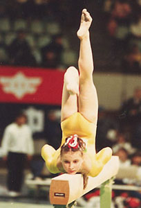

Elena Gurova (USSR)
1987 Chunichi Cup AA Champion

Medal Total
World Championships: 1 Silver
Elena was born on December 30, 1972 in Moscow. She was coached at the Central Army Sports Club by Viktor and Irina Razumovsky (who also coached Elena Shevchenko and Olga Chudina). A gymnastics child prodigy, Elena made her international debut at the age 12 at the DTB Cup -- which she won. She was the first female to perform a double-twisting layout Yurchenko vault in competition, and she was the USSR alternate at the 1987 European Championships.
Competition Results
1984
All-Union Schoolchildren's Spartakiad: 1st Team, 1st AA (Candidate for Master)
DTB Cup: 1st AA, 1st V, 1st B, 3rd UB, 2nd
FX
Jr. Friendship Tournament (Druzhba): 1st Team, 2nd AA, 1st V, 1st FX, 3rd
UB
Jr. GDR-USSR Dual Meet: 1st Team, 1st AA, 1st UB, 1st B, 1st FX
1985
Champions All: 9th AA
Cottbus Cup: 1st AA
Jr. Friendship Tournament (Druzhba): 1st Team, 1st AA, 1st UB
USSR Spartakiade: 2nd AA
1988
CHN-USSR Dual Meet: 1st Team, 1st AA
USSR Championships: 14th AA, 6th B, 7th V, 7th FX
USSR Cup: 10th AA
World Sports Fair: 1st AA, 1st UB, 2nd FX, 3rd B, 6th v
This page was created on January 27, 2000 and was
last updated on August 12, 2026.
©Gymn Forum